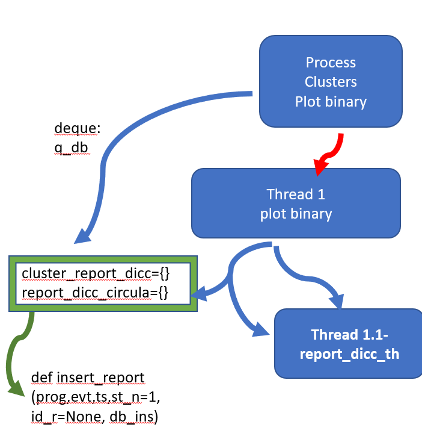
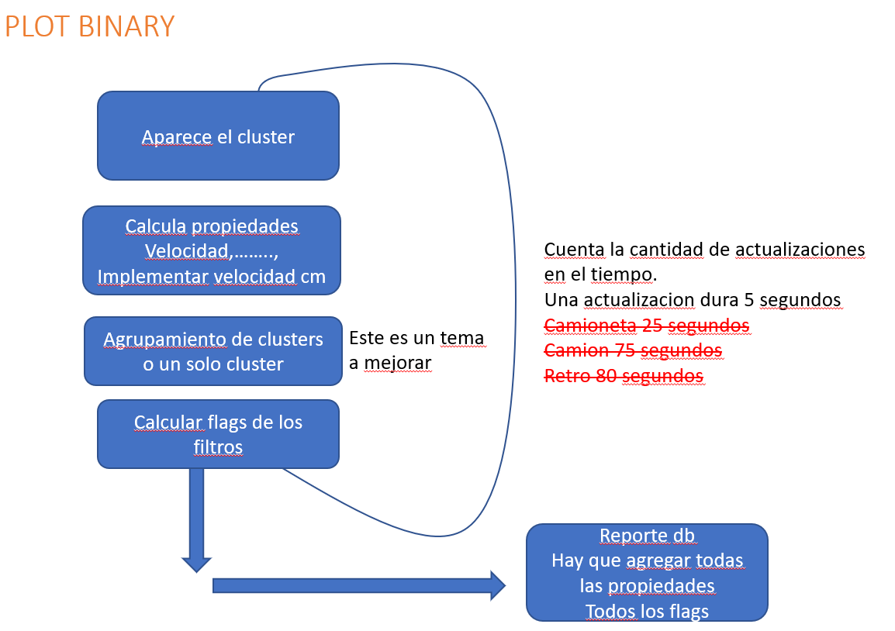

clustering_wf.py¶
-
clustering_wf.agrupar_rango(array, dist)¶ Agrupa greedy puntos a distancia menor a dist. si los rangos estan muy separados devuelve lo esperado si no depende del inicio y puede devolver rangos mas chicos que los optimos. [1,3,4,5] con dist 3 puede devolver {1,3},{4,5} en lugar de [3,4,5]
-
clustering_wf.base_calc(precomp_base=True)¶ calcula la linea de base
-
clustering_wf.bin2prog(b)¶ Convierte de bines a progresiva multiplicando por dz. Toma como referencia la circunvalacion, correspondiente al pk342.
Ejemplo: En el bin 2500, se realiza la siguiente cuenta ((2500*2.03)-4232)/1000.+342, resultando en un valor de progresiva de 342.82
Atributos: b : bin en columnas del waterfall.
-
clustering_wf.cluster_box(cluster)¶ Calcula los 4 bordes del rectangulo que contiene a un dado cluster.
Atributos: ll : array de numpy con la esquina inferior izquierda width : ancho en bines height : altura en bines
-
clustering_wf.cluster_fit(db, pts)¶ Devuelve una lista de clusters y los puntos ruidosos, que extrae del algoritmo de dbscan. Devuelve el ajuste a los puntos del cluster tomados del binario.
Atributos: return pts[class_member_mask],cs_cnt,not_cs_cnt,ajuste
-
clustering_wf.cluster_proc(q, bin_filt_vect, eps, min_samples, plot_clusters, report_desc, log_path, db_ins, actualiza_archivo_db, raw_data_flag, raw_cluster_save, save_desc, bins_raw, shots_per_chunk, std_win)¶ Proceso que adquiere los datos de la cola de distribucion y lanza los threads del binario y de la base de datos.
Pasos.
- Primero calcula la linea de base en funcion del zscore.
- Plotea el binario y luego queda congelado con plt.show
- Lanza thread 1 –> funcion db_rep_th
- Lanza thread 2 –> funcion plot_binary
Ver la parte importante es donde se ejecuta plot binary
-
clustering_wf.cluster_report(vel, pts_cant, ll, h, report)¶ » Maneja el estado y la cantidad de actualizaciones en report dicc de los clusters interesantes
-
clustering_wf.keys_dist(d, y0, dist)¶ Retorna texto de posible excavacion
-
clustering_wf.lineas_importantes(pts, cant=30, dist=200)¶ Devuelve lineas importantes verticales donde pueden haber posibles excavaciones manuales debido a la acumulacion de muchos clusters. Solo esta probada en los primeros kms.
TODO: #FALTA MERGE DE PROXIMOS EN Y y considerar manchas, last 20 kms////
-
clustering_wf.plot_binary(q, ax, img, fig, filas_imagen_binaria, mad_data, median_data, base_fin, bin_filt_vect, eps, min_samples, q_db, plot_clusters, report_desc, save_desc, raw_data_flag, raw_cluster_save, bins_raw, shots_per_chunk, std_win)¶ Thread principal de calculo y de actualizacion de los plots binarios. Thread derivado de cluster_proc.
Se propone cambiar la estructura actual por la siguiente:

{kind=link}
{kind=link}
-
clustering_wf.prog2bin(p)¶ Convierte de [progresiva] a bines dividiendo por dz. Toma como referencia la circunvalacion, correspondiente al pk342.
-
clustering_wf.rep_dicc_watch(evt_dicc, q_db, largest_wf_key)¶ Chequea que despues de 120 segundos de terminado el evento siempre tenga fin. Por eso esta “fin evento default”
-
clustering_wf.ts_to_stringDate(ts)¶ Retorna un string del timestamp que envia el programa en c
-
clustering_wf.update_image(image, new_rows)¶ Realiza un update de los datos en la referencia a la figura image que se le da. Puede ser el wf normal o el binario con la cantidad de filas de new_rows.
Nota
codigo del proceso de los clusters
Modulos de clustering_wf¶
Utiliza las siguientes funciones auxiliares:
util_das_fut¶
-
util_das_fut.bin2prog(b)¶ Convierte de bines a progresiva multiplicando por dz. Toma como referencia la circunvalacion, correspondiente al pk342.
Ejemplo: En el bin 2500, se realiza la siguiente cuenta ((2500*2.03)-4232)/1000.+342, resultando en un valor de progresiva de 342.82
Atributos: b : bin en columnas del waterfall.
-
util_das_fut.dq_extract(dq, st, end)¶ auxiliar function para salvar la porcion de dato crudo necesario
-
util_das_fut.event_save(event_data)¶ Salva dato crudo with a cPickle
-
util_das_fut.nocopy_roll_update(matrix, new_data, roll=1000, cuts=100)¶ solo rollea para arriba y filas roll es la cantidad de filas de new_data
-
util_das_fut.save_event(x_ini, x_fin, raw_data_dq, bins_raw, std_data, std_win, ts_event, extra_bins_each_side=100)¶ thread to salvar evento de dato crudo
Mientras que para el manejo de la base de datos
database¶
Created on Sun Nov 10 02:10:00 2019
@author: kreetus
-
db_func.bin2prog(b)¶ Convierte de bines a progresiva multiplicando por dz. Toma como referencia la circunvalacion, correspondiente al pk342.
Ejemplo: En el bin 2500, se realiza la siguiente cuenta ((2500*2.03)-4232)/1000.+342, resultando en un valor de progresiva de 342.82
Atributos: b : bin en columnas del waterfall.
-
db_func.db_rep_th(q, actualiza_archivo_db, db_ins, log_path)¶ thread principal donde va llamando a update db y insert db to actualizar la base de datos
-
db_func.handle_report_dicc_from_cluster(ll, db_dicc, st)¶ maneja los reportes. Si esta reportado o no, decide si va a enviarlo a la base de datos
-
db_func.insert_report(prog, evt, ts, inten_max, st_n=1, id_r=None, db_ins=True, log_path=None, db_on=False)¶ inserta reporte en la base de datos
-
db_func.log_sample(sample_tuple, log_path)¶
-
db_func.reporte_db(st, st_cant, velocidad, good_fit, ll, h, w, q_db, report_dicc_circula, report_desc, save_desc, inten_max, record_dict)¶ reglas de criterio para definir que tipo de vehiculo es
-
db_func.update_db_file(dbfilepath)¶ serializa la base de datos a un archivo denominado dbfile